Microservices, Docker Compose, Firebase Authentication, Prometheus, Grafana, and Incident Simulation
The existing portfolio and shop/order applications were adapted into an SRE assignment system. The final system contains a web interface, Firebase-based authentication, product and project data, transactional order creation, five independent backend services, Docker Compose orchestration, Prometheus metrics, Grafana visualization, and a controlled incident simulation.
Public cloud providers required billing activation for VM creation. To avoid paid cloud usage, the system was provisioned on a local Ubuntu virtual machine in Oracle VirtualBox. This still satisfies the requirement to provision a VM and run the application in an isolated server-like environment.
The application is split into five backend microservices plus a frontend gateway:
Browser
-> Frontend nginx container :8080
-> auth-service :4000
-> product-service :4001
-> order-service :4002
-> user-service :4003
-> chat-service :4004
user-service
-> order-service through Docker DNS:
http://order-service:4002/api/orders/my
product-service / order-service / chat-service
-> mongodb:
mongodb://mongodb:27017/shop
prometheus
-> scrapes /metrics from all five services
grafana
-> visualizes Prometheus metrics
| Service | Port | Responsibility |
|---|---|---|
auth-service |
4000 | Verifies Firebase ID tokens and exposes authenticated user/session endpoints. |
product-service |
4001 | Serves product and category data from MongoDB. |
order-service |
4002 | Creates orders and lists orders for the authenticated Firebase user. |
user-service |
4003 | Serves portfolio profile/project data and internally calls order-service for user orders. |
chat-service |
4004 | Stores and lists user/admin messages. |
Authentication is handled by Firebase Authentication. The frontend signs the user in through Firebase,
receives a Firebase ID token, and sends it to backend services with the header
Authorization: Bearer <Firebase ID token>.
The backend services verify the same token using Firebase Admin SDK. If the token is missing or invalid,
protected endpoints return 401 Unauthorized. For order creation, the decoded Firebase
uid is saved as userId in MongoDB.
The transactional operation is order creation. The user creates an order from the dashboard, and
order-service stores the order in MongoDB with status created.
The dashboard displays orders through user-service. This service calls
order-service internally through the Docker network using
http://order-service:4002/api/orders/my and forwards the same Firebase bearer token.
This demonstrates independent backend services communicating with each other inside Docker Compose.
The full system runs through Docker Compose on a local Ubuntu VM. The VM was created with Oracle VirtualBox, configured with bridged networking, and accessed from the host machine using the VM IP address.
Core run command:
docker compose up -d --build
The Compose stack includes:
frontendauth-serviceproduct-serviceorder-serviceuser-servicechat-servicemongodbprometheusgrafana
Each service exposes /health and /metrics. Prometheus scrapes all five services
and itself. Grafana visualizes service status, uptime, request rate, error rate, and request duration.
Tracked metric areas include:
The incident was simulated by breaking the order-service database connection. The MongoDB URL was changed from:
MONGO_URL=mongodb://mongodb:27017/shop
to:
MONGO_URL=mongodb://wrong-mongodb:27017/shop
This caused Mongo-dependent services such as product-service, order-service,
and chat-service to become unavailable. The authentication and user/profile services
continued to work, demonstrating partial system availability and graceful degradation.
Recovery was performed by restoring the correct MONGO_URL and restarting the affected services
with Docker Compose. Prometheus and Grafana confirmed that all targets returned to healthy status.
The simulated incident was caused by an incorrect MongoDB connection string in the Mongo-dependent backend services. As a result, order-related, product-related, and message-related functionality became unavailable, while authentication and basic user profile functionality continued to work.
Users remained authenticated and could still access the dashboard profile area. However, users could not reliably create or view orders, and sections depending on MongoDB showed degraded behavior. This affected an important transactional workflow, but it did not take down the entire system.
SEV-2 / Medium. The system was partially available, but a core transactional capability was affected. Authentication and profile services remained available, reducing the severity from a full outage.
| Time | Event |
|---|---|
| 00:20 | Normal state confirmed in Grafana with service health values at 1. |
| 00:37 | Incorrect MongoDB hostname was applied through MONGO_URL=mongodb://wrong-mongodb:27017/shop. |
| 00:38 | Docker Compose status showed Mongo-dependent services becoming unavailable. |
| 00:43 | Grafana showed affected targets down and HTTP error rate increasing. |
| 00:55 | Correct MongoDB URL was restored and services were restarted with Docker Compose. |
| 00:58 | Grafana confirmed recovery with all service health values back to 1. |
The root cause was an invalid database hostname in the MONGO_URL environment variable.
The affected services could not resolve or connect to wrong-mongodb through the Docker network.
The incorrect connection string was replaced with the correct internal Docker DNS hostname:
mongodb. The affected services were then rebuilt/restarted through Docker Compose.
After restarting the services, Prometheus targets returned to UP state, Grafana health values returned to 1, and the dashboard functionality was restored. The recovery screenshots confirm both container-level and monitoring-level recovery.
During the incident, users could stay logged in and view profile information, but product, order, and message workflows were degraded. The most important customer-facing impact was loss of the order creation and order listing workflow.
Detection was successful because Prometheus and Grafana showed target health changes and an increase in HTTP error rate. The response was also successful: container status was checked, the invalid database configuration was identified, the correct value was restored, and service health was verified after restart.
The incident showed that configuration errors can break transactional functionality even when the VM, frontend, and some backend services remain available. Monitoring should check not only container status, but also application-level health and dependency health.
.env.example template.Terraform configuration was prepared and validated as Infrastructure as Code evidence. The Terraform plan creates a cloud VM and firewall rules for application and monitoring ports. Due to billing restrictions on the selected public cloud provider, the Terraform configuration was validated with init/validate/plan, while the runtime deployment was demonstrated on a locally provisioned Ubuntu VM. This local VM was used as a controlled server-like environment for Docker Compose, monitoring, incident simulation, and recovery evidence.
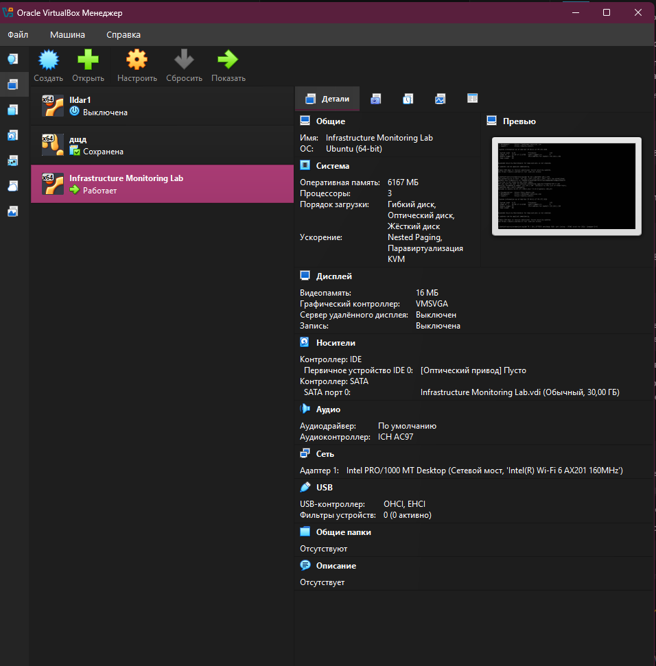
Figure 1. Ubuntu VM provisioned and running in Oracle VirtualBox.
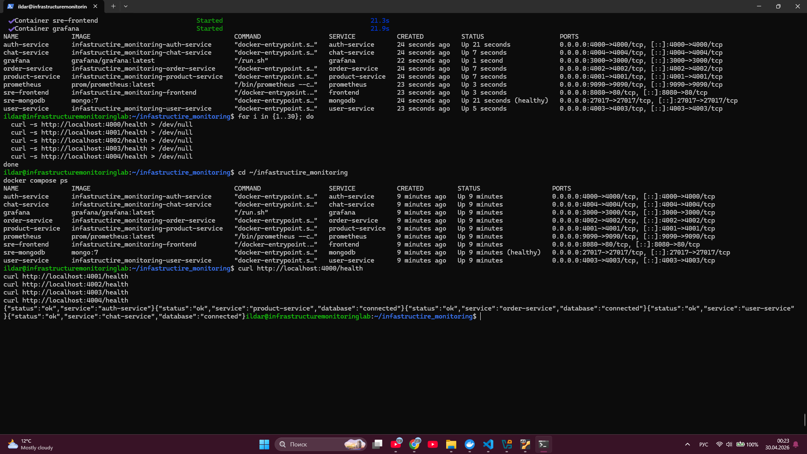
Figure 2. Docker Compose stack running, with health endpoints returning successful responses.
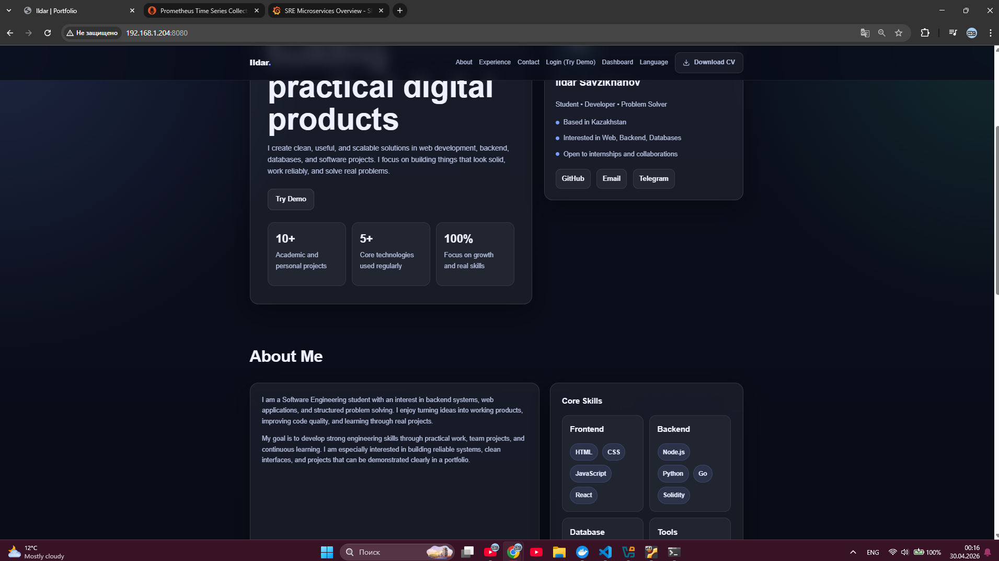
Figure 3. Web interface served from the VM at 192.168.1.204:8080.
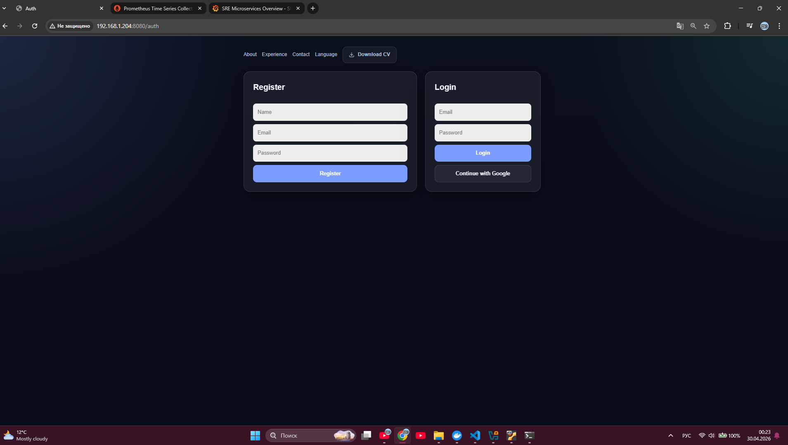
Figure 4. Authentication page with register, email login, and Google sign-in options.
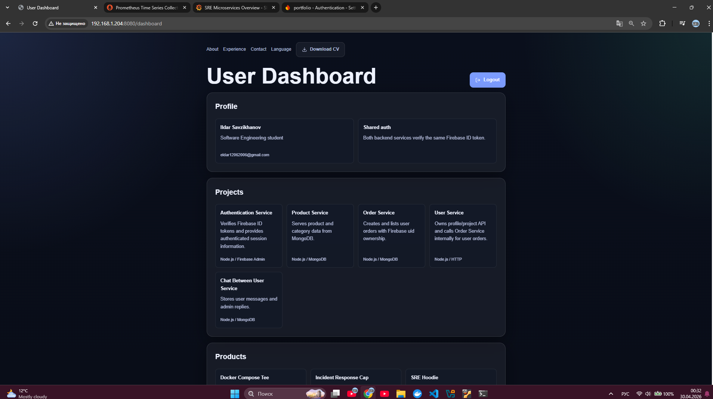
Figure 5. Authenticated user dashboard showing profile data and five microservice project cards.
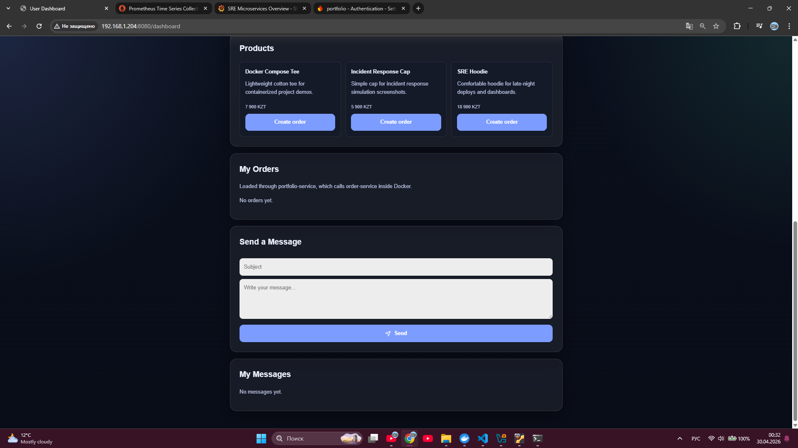
Figure 6. Product catalog loaded in the authenticated dashboard.
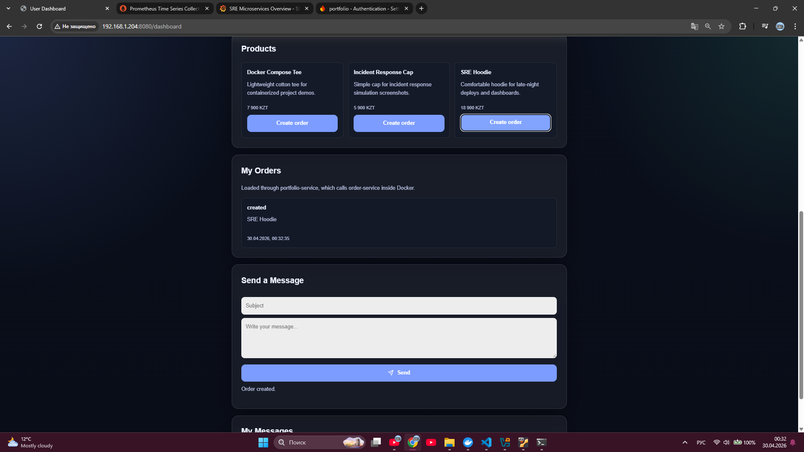
Figure 7. Order created successfully and listed under My Orders through the internal user-service to order-service flow.
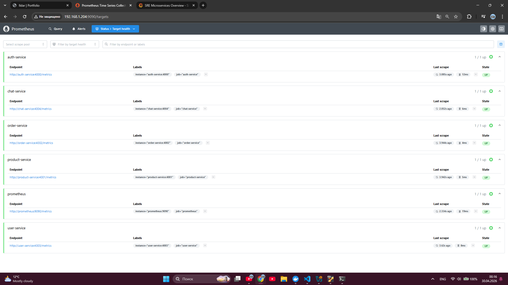
Figure 8. Prometheus target health page showing all service metric endpoints in UP state.
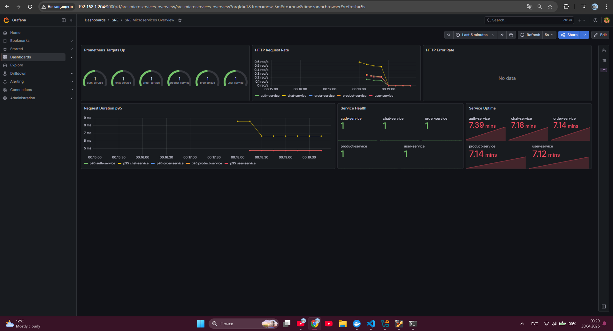
Figure 9. Grafana dashboard during normal operation with targets, request rate, request duration, health, and uptime.
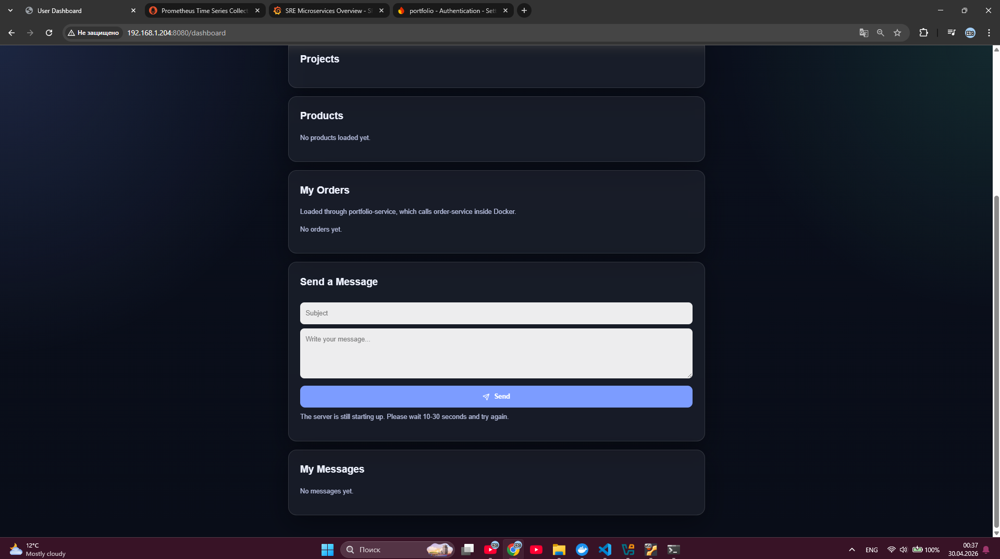
Figure 10. Incident state: user remains authenticated, while Mongo-dependent product/order sections fail to load.
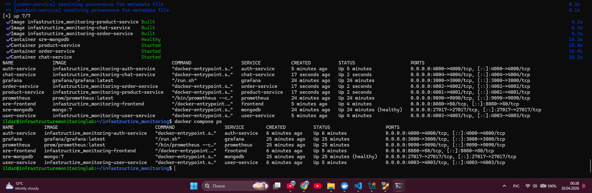
Figure 11. Docker Compose evidence during the incident: Mongo-dependent services are unavailable while core services remain running.
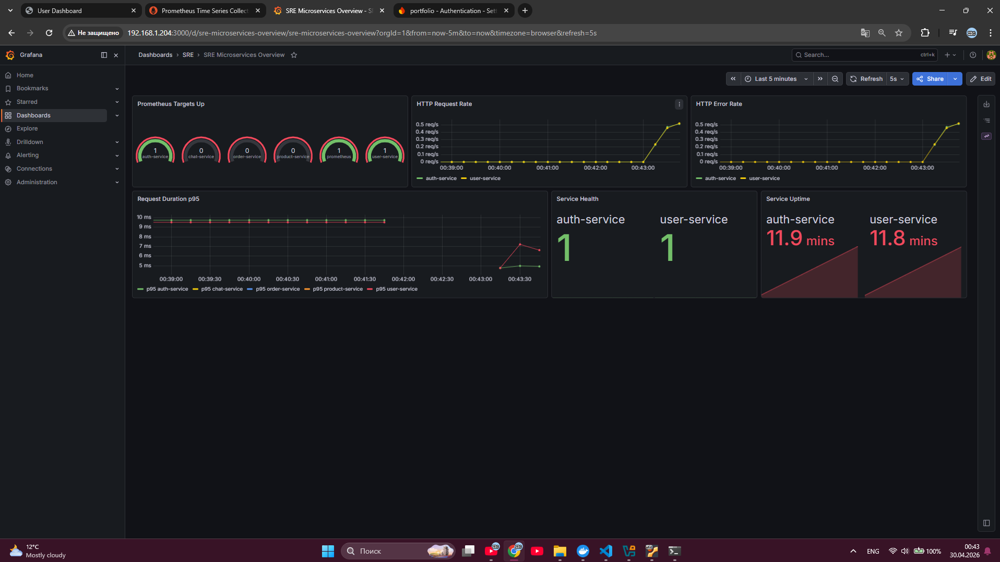
Figure 12. Grafana during the incident: affected targets are down and HTTP error rate increases.
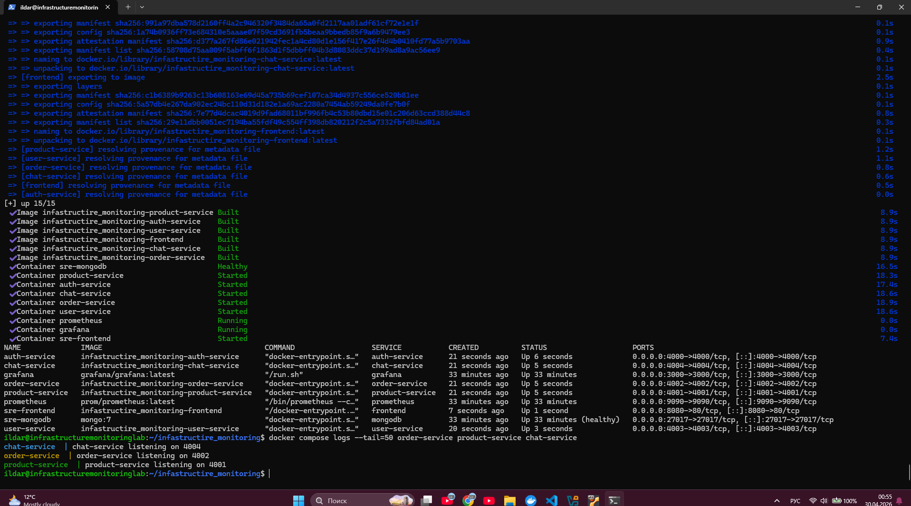
Figure 13. Recovery state: services were rebuilt/restarted after fixing MongoDB connection settings.
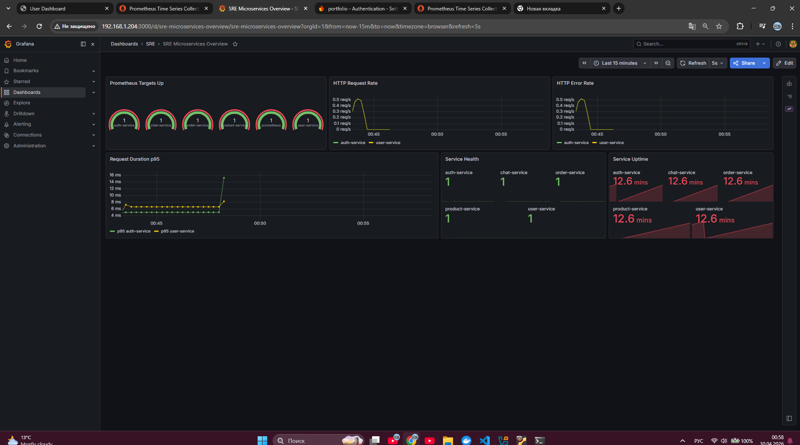
Figure 14. Grafana after recovery: all targets and service health values are back to 1.
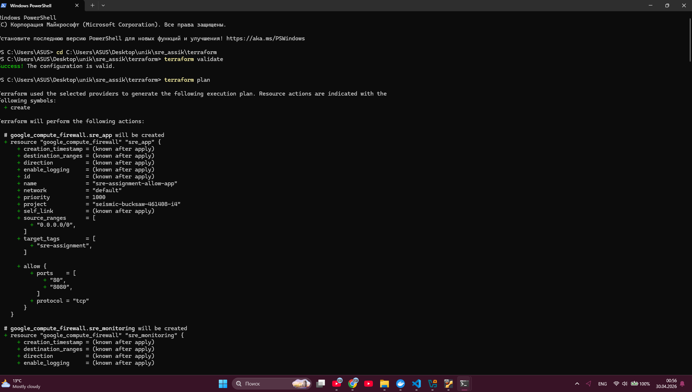
Figure 15. Terraform validation and plan output as Infrastructure as Code evidence.
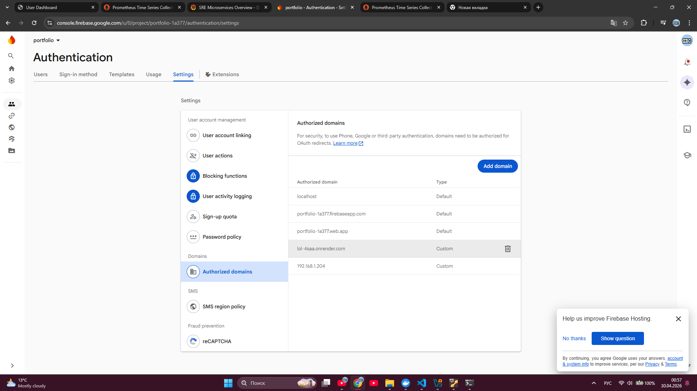
Figure 16. Firebase Authentication authorized domains configured for the VM IP address.
The final system satisfies the assignment goals: it has a web UI, Firebase authentication, project and product data, transactional order creation, five independent backend services, service-to-service communication, Docker Compose deployment, Prometheus metrics, Grafana dashboards, and a documented incident simulation with recovery.